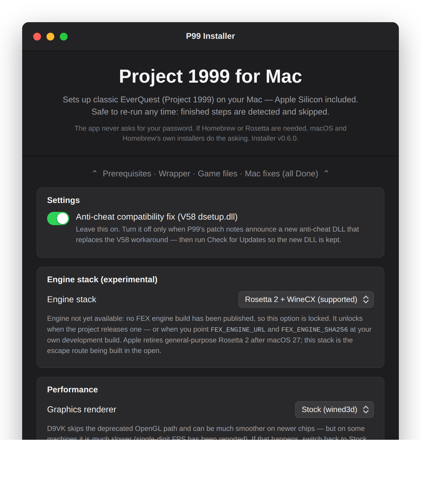
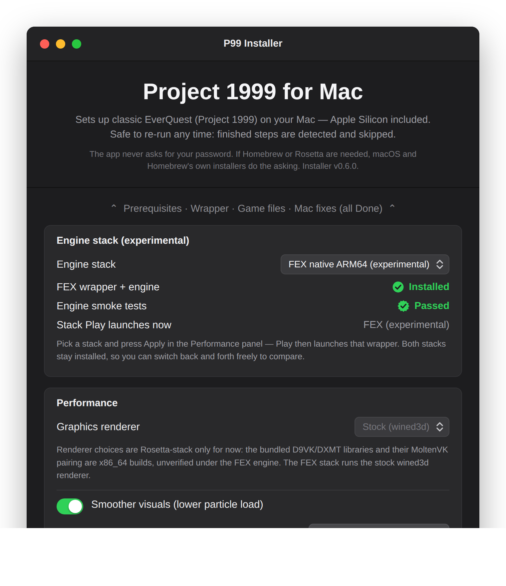

The FEX stack (experimental)¶
This page covers the project's post-Rosetta engine stack: native ARM64 Wine with FEX's wine-facing x86 emulation module instead of Rosetta 2. It exists because Apple has said general-purpose Rosetta remains available only through macOS 27 — and the supported engine is an x86_64 binary that needs it (background: the Post-Rosetta direction).
Read this first
There is no working FEX engine yet. What ships today is the complete, tested plumbing — a second engine stack that installs side by side with the supported one, a pinned slot for the engine tarball, smoke tests, and the installer UI to switch between stacks. Every piece of it is gated: for everyone who hasn't pinned an engine, nothing changes at all. The Rosetta stack remains the only supported way to play.

How the two stacks coexist¶
Each stack is a complete, independent wrapper app — the experimental one never touches your working install:
/Applications/P99.app the supported stack (x86_64 WineCX + Rosetta 2)
/Applications/P99 FEX.app the experimental stack (ARM64 wine + FEX)
~/Games/EverQuest your game files — shared, symlinked into BOTH
| Shared between stacks | Per-stack | |
|---|---|---|
| What | Game files, P99 patches, the three Mac fixes, eqclient.ini (so your keybinds and settings follow you) |
Wrapper app, wine prefix, renderer choice, MoltenVK pairing, launch environment |
| Why safe | The fixes are on-disk changes to game files and are engine-independent — the unpacked dpvs.dll is functionally identical to the original, harmless under any engine |
Wine versions must never share a prefix; keeping them apart is what makes switching risk-free |
One consequence of the shared eqclient.ini: the Smoother visuals and
frame-rate-cap settings apply to both stacks at once — they are EQ's own
settings, not engine settings. The renderer choice, by contrast, is
per-stack (it lives inside each wrapper's prefix).
Which stack the Play button (and 40-launch.sh) uses is recorded in one
marker file: ~/Library/Application Support/p99-mac/active-stack. Switching
stacks rewrites that marker and nothing else, so you can toggle back and forth
freely to compare. If the FEX wrapper is ever deleted by hand, the marker
self-heals back to the Rosetta stack.
Why the option is greyed out¶
The engine slot in scripts/config.sh follows the same rule as every other
big component: a pinned URL plus a sha256 that must match. Right now:
FEX_ENGINE_URLpoints at a future release of this project (fex-engine-1) that does not exist yet;FEX_ENGINE_SHA256ships empty, and every FEX code path — the build script, the stack switcher, the installer UI — refuses to proceed while it is empty (./status.shreports it asfex_pinned).
When a prototype engine exists, pinning it is one release + two values. Until then the installer shows the panel with the FEX option locked and this explanation, which is exactly the state the screenshot above captures.
Trying it with your own engine build¶
If you are experimenting with a native ARM64 wine + FEX build, point the slot
at your own tarball — file:// URLs work:
export FEX_ENGINE_URL="file:///path/to/my-fexwine.tar.xz"
export FEX_ENGINE_SHA256="$(shasum -a 256 /path/to/my-fexwine.tar.xz | cut -d' ' -f1)"
cd scripts
P99_STACK=fex ./10-build-wrapper.sh # builds /Applications/P99 FEX.app
P99_STACK=fex ./20-install-game.sh # links the shared game folder in
./75-fex-smoke.sh # smoke-test the engine (below)
./70-stack.sh fex # Play now launches the FEX wrapper
./40-launch.sh # ...moment of truth
./70-stack.sh rosetta # switch back any time
In the installer app the same flow is the Set Up FEX Stack button, which appears once an engine is pinned; after setup the stack picker unlocks and the Apply button in the Performance panel switches stacks:

The engine tarball contract: the tarball must contain a wswine.bundle/
directory laid out like the Sikarugir WineCX engines (bin/wine inside it) —
that is what 10-build-wrapper.sh extracts into the wrapper. A future pinned
engine release will follow the same layout.
What the smoke tests actually prove¶
75-fex-smoke.sh is deliberately honest about its coverage. Tier 1 runs
offline against the installed engine:
- Architecture — the wine binary should carry a native
arm64slice; an x86_64-only "FEX" engine still needs Rosetta (warned, not failed, so prototype engines can be exercised). wineboot— the prefix initializes.- 32-bit
cmd.exeecho — a real 32-bit Windows PE executes through the emulation module and produces output: the minimal end-to-end proof that x86 code is being fetched, translated, and run. - Registry round-trip —
reg add/reg queryon a scratch key.
What tier 1 cannot prove: structured-exception handling,
memory-protection changes, and self-modifying code — the exact things P99's
Themida-packed anti-cheat leans on (see
the boot sequence).
Those need purpose-built 32-bit test binaries that this repo cannot bundle
today. Tier 2 exists for exactly that hole: put your test .exe files in a
folder and run
P99_FEX_SMOKE_EXES=/path/to/tests ./75-fex-smoke.sh
— each must exit 0. A pinned fex-smoke-1 release asset of proper test
binaries is the intended future source. The last result (pass/fail) is
recorded and shown in the installer and in ./status.sh as fex_smoke.
Renderer support under FEX¶
The installer locks the renderer picker to Stock (wined3d) while the FEX
stack is selected. The bundled D9VK/DXMT DLL sets — and the CrossOver MoltenVK
build D9VK is paired with — have only ever been proven against the x86_64
Rosetta engine; under a native ARM64 engine their host-side halves are the
engine's own, untested territory. When a real engine exists and its renderers
are verified, the matrix widens. (Terminal users can still experiment:
P99_STACK=fex P99_RENDERER=d9vk ./60-renderer.sh — the renderer state is
per-stack, so nothing you break leaks into the supported install.)
Switching back / removing it¶
- Switch back:
./70-stack.sh rosetta(or pick Rosetta in the app and Apply). Both stacks stay installed. - Remove the experiment: the app's Uninstall screen gains a "Delete the
experimental FEX wrapper" toggle, or
P99_NONINTERACTIVE=1 P99_REMOVE_FEX_WRAPPER=1 ./90-uninstall.sh. DeletingP99 FEX.appby hand also works — the stack marker self-heals. Your game folder and the supported wrapper are untouched either way.
Known limits (deliberate, for now)¶
- The launcher binary question. The FEX wrapper reuses the Sikarugir template, whose launcher may itself be an x86_64 binary — fine while Rosetta exists (through macOS 27), but the fully Rosetta-free endgame needs an ARM64 launcher or a direct-wine launch path. Out of scope until an engine exists to launch.
- No SEH/self-modifying-code smoke binaries shipped yet (see above).
- The anti-cheat is the real boss. Everything here is scaffolding for the day an engine can attempt the Themida unpack. Expect that to be the hard part, exactly as it was on Rosetta.